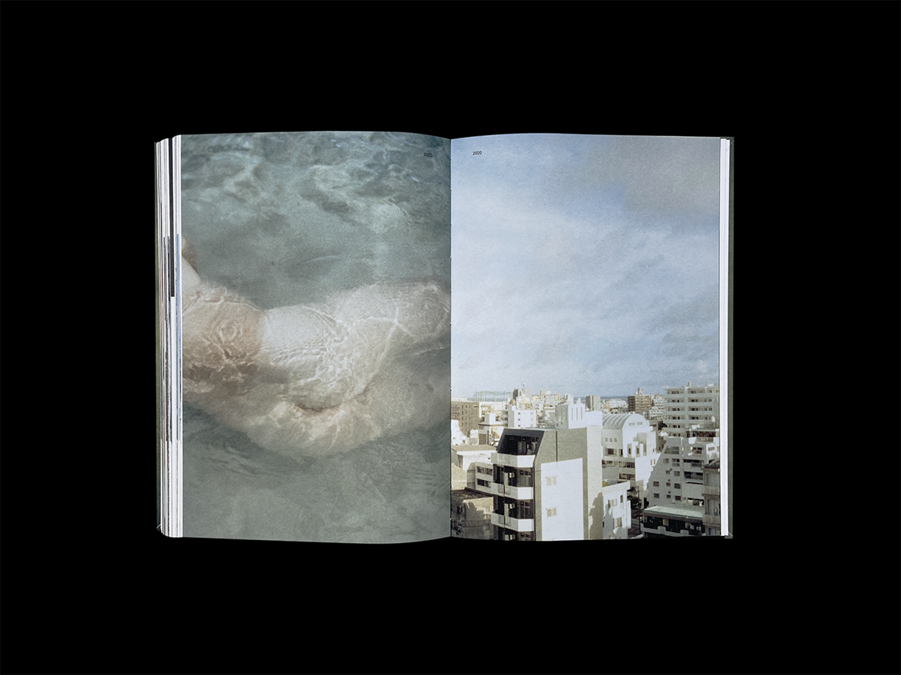

Typeface paper-la-papp from a receipt | (ongoing project)
Margaret Murphy | I Could Look at You All Day | Villa Heike Berlin | 2023 | Design for exhibition poster and invitation card | 841x594 mm, 210x148 mm
Nile Koetting | Script (Unattended Access) | parliament, Paris | 2023 | Video on e-Ink screen | script by Miriam Stoney
Among the participation as a production assistant, I was responsible for the design aspects of several productions. For this artwork Script, I choose the typeface Los Altos which is the recreation of Los Angels designed by the pixel artist Susan Kare
Aki Tsuji and Terumi Ishigami | fragments | Arles, France | Exhibition poster | 2023 | 297x210mm
HOF Berlin | celebration of BLESS's 20th anniversary exhibition | corner | Exhibition Flyer | 2023 | 105x148mm
Guido Guidi | Le Corbusier – 5 Architectures | Book Design | published by KEHRER Verlag Heidelberg | 2018 | Text: Rosa Tamborrino, Antonello Frongia, Andrea Simi (EN/IT) | 290x310 mm | 120 pages | 87 color ills. | ISBN 978-3-86828-833-9
In 2003, famous Italian photographer Guido Guidi created a series documenting a selection buildings by Le Corbusier in France. The project is collected in this publication,
showing a wide range of photographs never published before. Guido Guidi (b. 1941 in Cesena, Italy) has been pioneering Italian landscape and architectural photography for more than half a century.
Julius Berlin, Merci Bake Tokyo, Atelier September Copenhagen | Poster design for one day pop up café event | 2023 | illustration: Melina Sutter
Industrial heritage in France and Japan | Maison franco-japonais, Tokyo | Symposium leaflet | 2022 | 420x297mm (fold in half)
Merci Bake from Tokyo at Julius Berlin | Event poster for pop up café | 2023 | image courtesy by Shota Nakamura
Hanayo | Keep an Eye Shut | Book Design | co-published by KEHRER Verlag Heidelberg, Germany and torch press, Japan | 160x230 mm | 304 pages (306 color and b/w illustrations) | 2021 | Text: Kai Althoff, Takahiro Ito (top museum tokyo) Editor: Nao Amino | The book summarizes thirty years of the activities of Japanese photographer, artist Hanayo Nakajima.

Paul Hance | In Lak’ech Ala K’in | HOF Berlin | Invitation card | 2022 | 105 x 148mm
Tokyo Resonance Ensemble | Mit Streicherklängen durch böhmische Landschafte | St.Matthäus-Kirche, Berlin | Poster and Invitation Card | 2022 | 420x297mm
HOF Berlin | Information card of a private gallery space | 2022 | 105 x 148mm
OGY | co-working / alternative space in Kyoto | Logo Design | 2021 - | Noren: Layout and silk screen printing by Yuka Katsuki
Tracey Snelling, Lee Maelzer, Thibault Brunet Curated by Sonia Voss | All Tomorrow's Ruins | Villa Heike, Berlin | Photo Exibition Poster Design | 2021 | 1162 x 841 mm | inkjet printing
SYYS LCC Tokyo / Kyoto | Design for a corporate identity (a hard working ghost...) | 2020
Teindre puis tisser - Œuvres d'artistes originaires de Kyoto et d'Awajishima | Amitiés Tissées, Paris | Design for a textil exhibiton catalogue | 210 x 148mm | 2017
Anton Roland Laub | Mobile Churches | published by KEHRER Verlag Heidelberg | Book Design | 2017 | 227 x 165 mm | 114 pages | 8 b/w-, 11 duotone- and 40 color ills. | Text: Sonia Voss, Lotte Laub (EN/FR/DE) Edit: Sonia Voss | ISBN 978-3-86828-838-4 | Shortlisted for the Luma Rencontres Dummy Book Award, Les Rencontres de la Photographie, Arles 2017 and for the Unseen Dummy Award, Unseen, Amsterdam 2017.
(text from the book) Bucharest in the 1980s. Ceaușescu’s “systematisation” programme is in full swing in the Romanian capital: one-third of the historic centre has been wiped out to make way for imposing buildings and wide avenues intended to honour the regime. Despite Ceaușescu’s particularly dogged approach towards the churches, seven are spared and undergo a process as incredible as it is absurd: they are lifted and placed on rails then moved and hidden behind housing blocks. Withdrawn from the cityscape, they live secret lives interpolated in the disparate architecture that shapes Bucharest’s urban landscape today.
Jens Lüstraeten | Photo Exhibition Sunny Side Up | Villa Heike, Berlin | Poster Design | 2022 | 841x594mm
Manga Mirai Hackerson Her Taste | Hitomi Takenouchi | HITE-media, Tokyo | Manga Booklet Design | 2020 | 210x148 mm | 40 pages b/w Manga ills. | Edit: Shinya Yashiro
Yukari Shinomiya | Book Design | 2017 | Self-publishing | Tokyo | 257x182mm | laser printing, dual page binding | Edit: Minami Shimakage | the artist’s 4 years long self portrait project is archived in this volume
Kaiko no ie de (In the Silkworm’s House) | Event flyer | 2016 | 297x210 mm | 4 days-long performances and sounds art event at Fujino, Kanagawa
scene/Asia | Flyer for an art symposium | 2016 | 297x210 mm
Momonga Complex | Mori no naka no Momonga Complex (Momonga Complex in the woods) | Sagamihara Cultural Foundation | Poster Design, illustration | 2016 | Riso Printing
Yosuke Fujita (FUJI|||||||||||TA) | Invisible Lake | Poster Design | 2015 | Kanagawa Prefectural Sagami Lake Exchange Center, Art Gallery
Haruka Yoshida (dr.) | Country Gentlemen | performanced by Yosuke Fujita and Fuyuki Yamakawa | DVD Package and Brochure | 2015 | Photography for brochure by Tomohiko Tagawa | trailer: https://www.youtube.com/watch?v=S7-zGYd0y_0
*
Minami Shimakage
Graphic design, Editorial design
b. 1991 in Hokkaido Japan
lives and works in Berlin
After gaining practical work experience at the graphic design studio Fujita LLC, which is owned by a former art director at WIRED Japan, she moved to Berlin in 2017. From 2017 to 2020, in addition to her freelance design work, she concurrently held a position as an assistant at the gallery only photography Berlin, under the management of Roland Angst. In this role, she specifically assisted in organising the archives of the library of photo books and the collection of photo prints. She continues her works in the field of visual communication design.
Contact: shimakageminami at gmail dot com